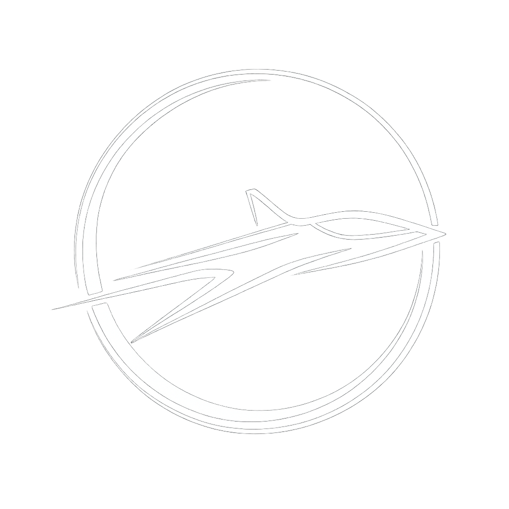

Device Setup
Connect your laptop to an Arduino over USB serial.
Manual Calibration
Move each servo in 5 degree steps and store fully extended / fully closed values.
No saved calibration yet.

human hand mirroring interface
Connect your laptop to an Arduino over USB serial.
Move each servo in 5 degree steps and store fully extended / fully closed values.
No saved calibration yet.
Ensure calibration angles are set properly to avoid damage before enabling live hand control.
Connect device and save calibration to continue.
Tracks one hand and interpolates servo targets from saved calibration values.
Idle